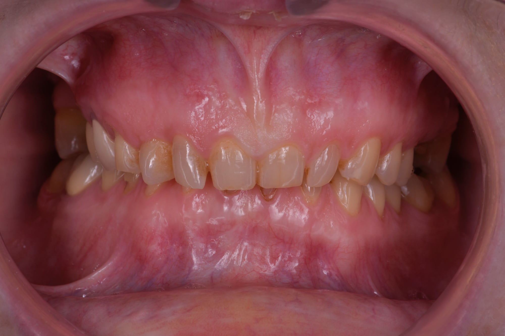

Accueil › Patient › Facettes
L’acte
Facettes
Céramique collée
Les facettes permettent une transformation esthétique globale du sourire : formes, longueurs, proportions, teinte, luminosité et architecture générale peuvent être redessinées à partir d’un projet conçu en amont. La préparation peut être très limitée lorsque la situation le permet. L’objectif est de traduire en bouche le sourire défini avec le patient, avec un haut niveau de précision clinique et céramique.

Praticien hospitalier, Pitié-Salpêtrière · CMME, Sainte-Anne

1 / 5
Transformer l’architecture du sourire
Un projet de facettes permet de redessiner formes, proportions, longueurs, volumes et lumière du sourire à partir d’une planification construite avec le patient.
Quand l’objectif est de transformer véritablement l’architecture du sourire
Les facettes permettent d’aller très loin dans la transformation esthétique d’un sourire. Formes, proportions, longueurs, volumes, teinte, luminosité et ligne du sourire peuvent être repensés de manière cohérente avec le visage et avec les souhaits du patient.
Il ne s’agit pas simplement de « mettre de la céramique sur les dents ». Une prise en charge réussie repose sur un projet esthétique conçu en amont, discuté avec le patient puis traduit avec précision en bouche.
Sublimer un sourire plutôt que remplacer des dents
Une facette est une restauration très fine en céramique, collée principalement sur la face visible de la dent. Elle peut permettre de modifier la forme, la longueur, la largeur, certaines proportions, la couleur, la luminosité et l’équilibre global du sourire.
Dans certaines situations, il est possible de transformer de manière importante la perception d’un sourire tout en conservant une approche très respectueuse des tissus dentaires.
2 / 5
Décider du futur sourire
Comment décide-t-on à quoi ressemblera le futur sourire ?
Le sourire se dessine avant de se traiter
Le projet commence par un bilan esthétique personnalisé. Photographies, scan numérique, analyse du visage et du sourire permettent d’étudier la ligne du sourire, les proportions dentaires, la position des bords incisifs, les volumes, la relation avec les lèvres et les asymétries.
La planification numérique permet ensuite de tester différentes propositions. Le patient participe aux décisions esthétiques : plus naturel ou plus transformé, formes plus douces ou plus affirmées, longueur, proportions, niveau de luminosité.
Le sourire doit rester le sien, mais dans sa version la plus aboutie selon le projet choisi.
Smile design et simulation
J’utilise notamment SmileCloud comme outil de planification et de communication. Le logiciel permet de construire des propositions de smile design à partir de données faciales, d’intégrer des références 3D et de produire des simulations visuelles destinées à faciliter la discussion avec le patient.
La simulation ne constitue pas une photographie contractuelle du résultat final. Elle permet surtout de rendre le projet visible, de comparer plusieurs directions et d’aligner patient, praticien et laboratoire. Les revues récentes sur le Digital Smile Design suggèrent un intérêt pour la communication et les résultats centrés sur le patient, tout en soulignant encore l’hétérogénéité des études disponibles.
Planifier avant de restaurer
Projet numérique, puis orthodontie pré-prothétique, puis quatre facettes minimalement invasives.
3 / 5
La céramique, et la préparation
La céramique : lumière, profondeur et finesse
La céramique permet de contrôler très finement la teinte, la translucidité, la texture, l’état de surface, la réflexion de la lumière et les caractérisations.
Je travaille avec des céramistes sélectionnés pour leur très haut niveau esthétique et leur capacité à traduire fidèlement un projet de sourire, afin que les pièces réalisées ne soient pas de simples restaurations standardisées mais la traduction du design défini avec le patient.
Faut-il beaucoup tailler les dents pour poser des facettes ?
Aujourd’hui, la préparation peut être très limitée
La quantité de préparation dépend entièrement de la situation initiale. Lorsqu’une dent possède déjà une forme, une position et un volume compatibles avec le projet, la préparation peut être très faible. Dans certains cas très sélectionnés, une approche sans préparation ou quasi sans préparation peut être envisagée.
À l’inverse, vouloir imposer une absence de préparation dans une situation qui ne s’y prête pas peut conduire à des dents trop épaisses ou à un résultat artificiel.
La priorité est donc : obtenir la forme souhaitée tout en préservant le maximum d’émail compatible avec le projet. Les données récentes retrouvent de meilleurs résultats lorsque les facettes sont principalement collées à l’émail plutôt qu’à une dentine largement exposée.
Facettes et préservation tissulaire
Une réhabilitation esthétique réalisée après analyse d’usures importantes, selon une approche minimalement invasive.
4 / 5
Facettes ou composite, et la durée
Facettes ou composite bonding ?
Le composite bonding est particulièrement intéressant pour une transformation additive, très conservatrice, réparable et ciblée.
Les facettes sont particulièrement intéressantes lorsque l’on souhaite redessiner plusieurs dents avec une grande précision, contrôler fortement couleur, texture et proportions et construire un projet esthétique très stable.
Le choix dépend donc du niveau de transformation recherché, des dents de départ et du gradient thérapeutique approprié.
Combien de temps durent les facettes ?
Les facettes céramiques présentent des taux de survie élevés dans les études à long terme. Une méta-analyse récente rapporte, selon les matériaux, des taux de survie groupés autour de 94 à 97 % à environ dix ans pour plusieurs familles de céramiques, tout en rappelant que survie et absence totale de complication ne sont pas synonymes.
La qualité du collage, la quantité d’émail disponible, l’occlusion, les habitudes du patient et l’entretien influencent le pronostic.
5 / 5
À quoi ressemble le parcours
À quoi ressemble réellement le parcours ?
La facette n’est donc pas un produit standard. C’est le dernier maillon d’une chaîne de décisions esthétiques et techniques.
À quoi ressemble réellement le parcours ?
- Comprendre ce que vous souhaitez changer
- Photographier et scanner
- Analyser le visage et le sourire
- Dessiner plusieurs propositions si nécessaire
- Choisir ensemble une direction
- Déterminer la quantité minimale de préparation compatible avec le projet
- Transmettre le design au céramiste
- Valider les pièces
- Contrôler et entretenir
Questions fréquentes
Parfois, oui, dans des situations très sélectionnées. Mais le « no-prep » n’est pas un objectif en soi. L’objectif est la préparation minimale compatible avec un résultat esthétique naturel.
Oui. C’est même une partie essentielle de la planification.
Une simulation numérique ou un projet intermédiaire peut être utilisé selon les situations pour visualiser et discuter la direction esthétique.
Non. Le résultat dépend du design, des proportions, de la céramique, du travail du laboratoire et de la qualité de l’intégration au visage.
Les photographies du cas


Construire un sourire avant de construire des facettes
Le premier rendez-vous sert à définir ce que vous souhaitez réellement transformer, puis à déterminer comment traduire ce projet de la manière la plus précise et la plus conservatrice possible.
Prendre rendez-vousSources scientifiques
Les références ci-dessous soutiennent les principaux messages cliniques de cette page.
- [1] Alwabel LK, Alabduljabar WM, Alawfi LK, et al. Digital Smile Design and Patient-Centered Outcomes in Esthetic Restorative Dentistry: A Systematic Review. Cureus. 2025;17(11):e98084. — DOI : 10.7759/cureus.98084 PubMed
- Saini RS, Kaur K, Gurumurthy V, et al. Impact of artificial intelligence-based digital smile design on patient and clinician satisfaction and facial esthetic outcomes: A systematic review and meta-analysis. Digit Health. 2025;11:20552076251388392. — DOI : 10.1177/20552076251388392 PubMed
- Alqutaibi AY, Saker S, Alghauli MA, et al. Clinical survival and complication rate of ceramic veneers bonded to different substrates: A systematic review and meta-analysis. J Prosthet Dent. 2025;134(4):1030–1039. — DOI : 10.1016/j.prosdent.2024.03.019 PubMed
- Klein P, Spitznagel FA, Zembic A, et al. Survival and Complication Rates of Feldspathic, Leucite-Reinforced, Lithium Disilicate and Zirconia Ceramic Laminate Veneers: A Systematic Review and Meta-Analysis. J Esthet Restor Dent. 2025;37(3):601–619. — DOI : 10.1111/jerd.13351 PubMed
- Source fonctionnelle — SmileCloud https://smilecloud.com/fr/